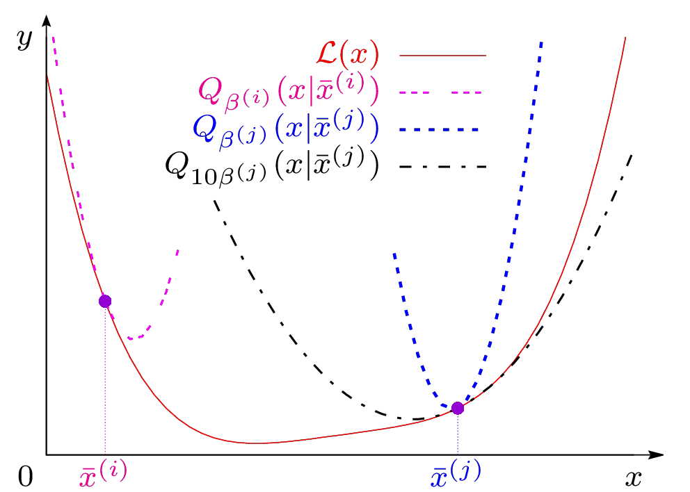
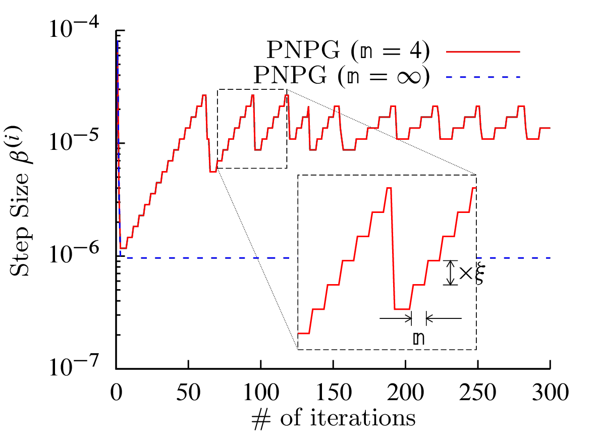

Renliang Gu and Aleksandar Dogandžić
We propose a method to solve the following optimization problem
\[ \begin{equation} \label{eq:f} \text{minimize}\qquad f(\bx)=\cL(\bx) +u r(\bx) \end{equation} \]
with respect to the signal \(\bx\), where \(\cL(\bx)\) is a convex differentiable data-fidelity (NLL) term, \(u>0\) is a scalar tuning constant that quantifies the weight of the convex regularization term \(r(\bx)\) that imposes signal sparsity and the convex-set constraint:
\[ \begin{equation} \label{eq:r} r(\bx)=\norm{\bpsi(\bx)}_1 + \mathbb{I}_C(\bx) \end{equation} \]
where \(\bpsi(\cdot): \mathbb{R}^p \mapsto \mathbb{R}^{p’}\) is an appropriate sparsifying transform such that \(\bpsi(\bx)\) is a signal transform-coefficient vector with most elements having negligible magnitudes. Usual options for \(\bpsi(\cdot)\) are \(\ell_1\)-norm and total-variation (TV) regularizations:
\[ \begin{align} \label{eq:Psibx} \bpsi(\bx)&=\Psi^T\bx \\ \label{eq:gradientMap} \SBR{\bpsi(\bx)}_{i=1}^{p’} &= \sqrt{\sum_{j\in\mathcal{N}_i}(x_i-x_j)^2} \end{align} \]
where \(\Psi \in \mathbb{R}^{p \times p’}\) is known sparsifying dictionary and \(\mathcal{N}_i\) is the index set of neighbors of \(x_i\) in an appropriate (e.g., 2D) arrangement.
This work is supported by the National Science Foundation under Grant CCF-1421480.
Under construction …
|  |
|  |
Clone or press “Download ZIP” button in the right panel of PNPG's GitHub page.
Under construction …
R. Gu and A. Dogandžić, (May. 2016). Projected Nesterov's Proximal-Gradient Algorithm for Sparse Signal Reconstruction with a Convex Constraint. arXiv: 1502.02613 [stat.CO].
R. Gu and A. Dogandžić, “Projected Nesterov’s proximal-gradient signal recovery from compressive Poisson measurements”, in Proc. Asilomar Conf. Signals, Syst. Comput., Pacific Grove, CA, Nov. 2015, pp. 1490–1495. [DOI] [BibTeX] [PDF]
@string{asilomar = {{Proc. Asilomar Conf. Signals, Syst. Comput.}}}
@inproceedings{gdasil15,
Address = {Pacific Grove, CA},
Author = {Renliang Gu and Aleksandar Dogand\v{z}i\'c},
Booktitle = Asilomar,
Month = nov,
Title = {Projected {N}esterov's Proximal-Gradient Signal Recovery from
Compressive {P}oisson Measurements},
Year = {2015},
pages={1490-1495}
}
John P. Dumas, Muhammad A. Lodhi, Waheed U. Bajwa, and Mark C. Pierce, “Computational imaging with a highly parallel image-plane-coded architecture: challenges and solutions,” Opt. Express, 24, 6145-6155 (2016).